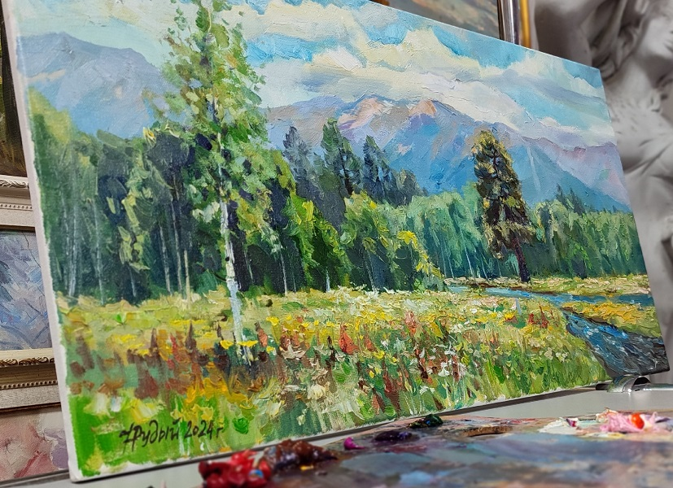

Уральское лето, 2024. Холст, масло, 40х70 см
https://vk.com/wall18580469_7332
Тип: Картина Жанр: Пейзаж
От составителя: Изображает пейзаж Северного Урала, район Кытлыма. Работа была начата в 2020 году.